authors
- tbielawa
maintainers
- tbielawa
contributors
- gtirloni : 6 commits
- mpdehaan : 12 commits
- bpennypacker : 1 commits
- bcoca : 4 commits
- mavimo : 1 commits
- tmzullinger : 7 commits
- tbielawa : 127 commits
- vaupelt : 2 commits
- b6d : 2 commits
- jctanner : 2 commits
- jonathanbouvier : 8 commits
- jpmens : 19 commits
- michaelw : 1 commits
- skvidal : 30 commits
total issue counts
unknown: 2
bugfix pull request: 36
pullrequest: 46
docs pull request: 1
feature pull request: 8
issue: 6
bug report: 5
issue history
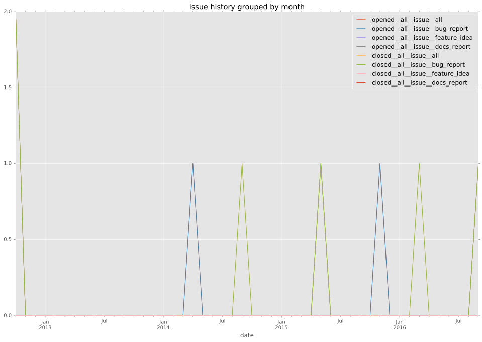
pullrequest history
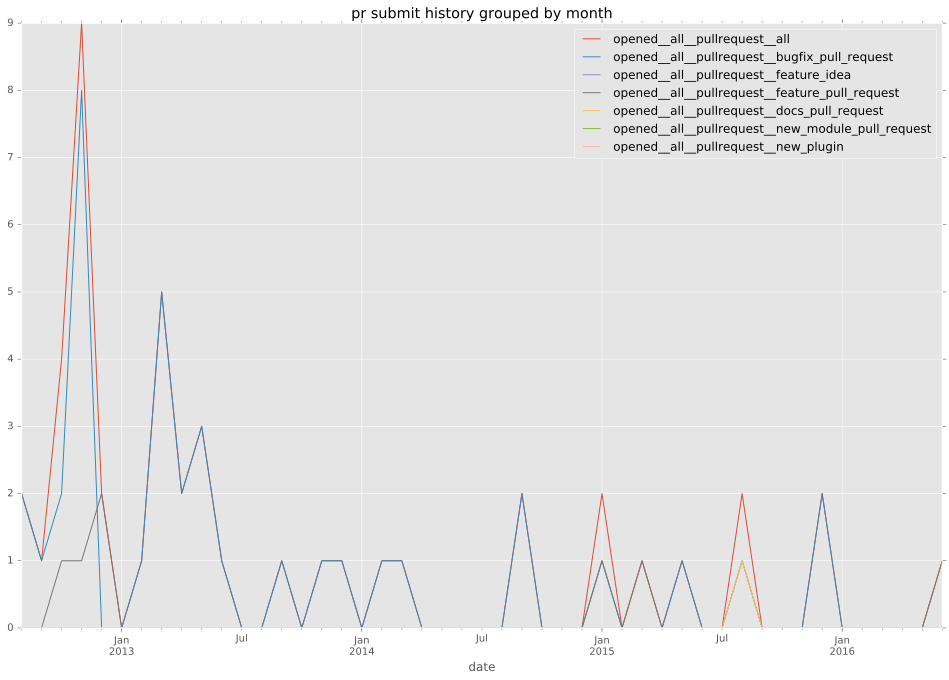
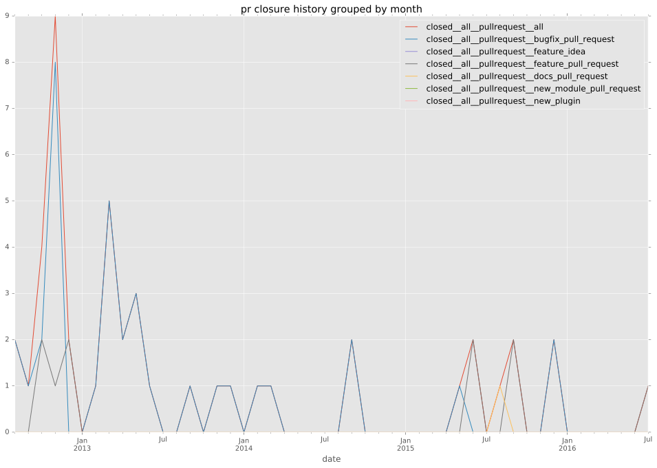
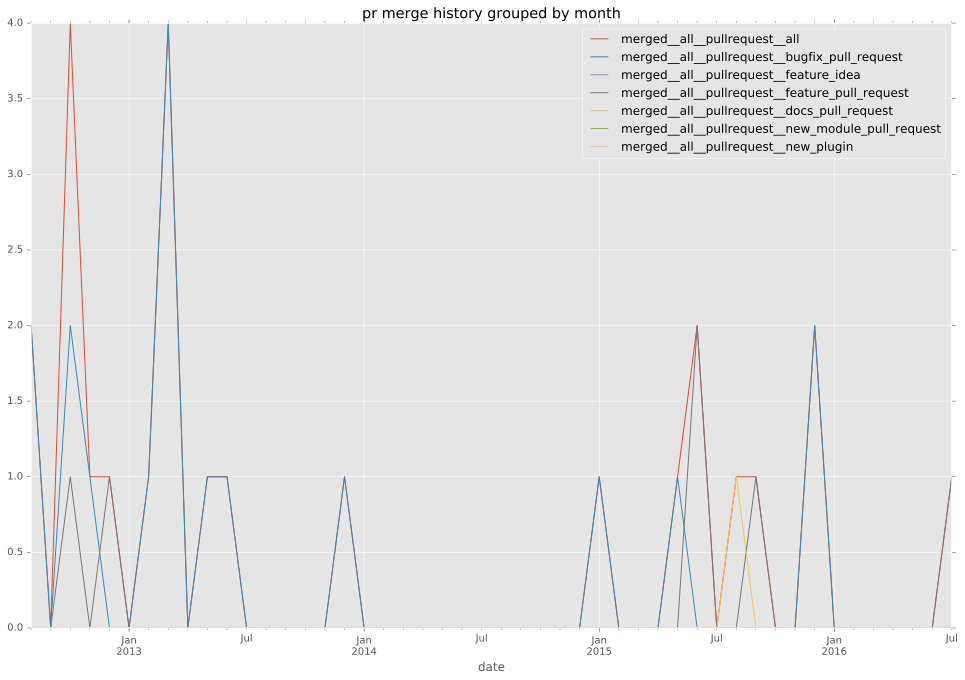
days open by issue type
feature pull request
count: 14
std: 46.5353463674
min: 0
max: 125
median: 7.0
mean: 37.0
all
count: 77
std: 31.7027483278
min: 0
max: 153
median: 0.0
mean: 11.961038961
pullrequest
count: 0
std: nan
min: nan
max: nan
median: nan
mean: nan
docs pull request
count: 2
std: 0.0
min: 0
max: 0
median: 0.0
mean: 0.0
bugfix pull request
count: 53
std: 4.05012139437
min: 0
max: 15
median: 0.0
mean: 1.98113207547
issue
count: 0
std: nan
min: nan
max: nan
median: nan
mean: nan
bug report
count: 5
std: 72.9061039969
min: 0
max: 153
median: 22.0
mean: 59.6
closures grouped by total days open
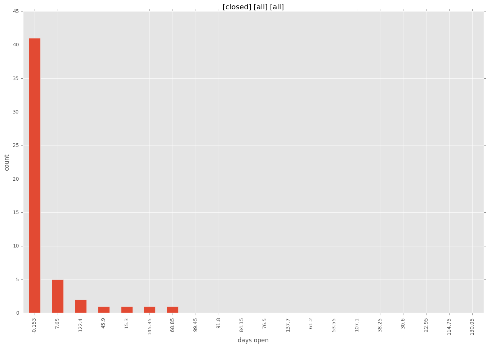
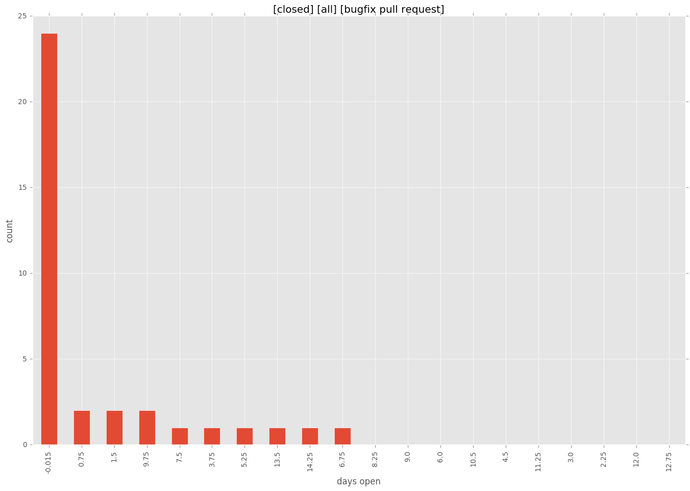
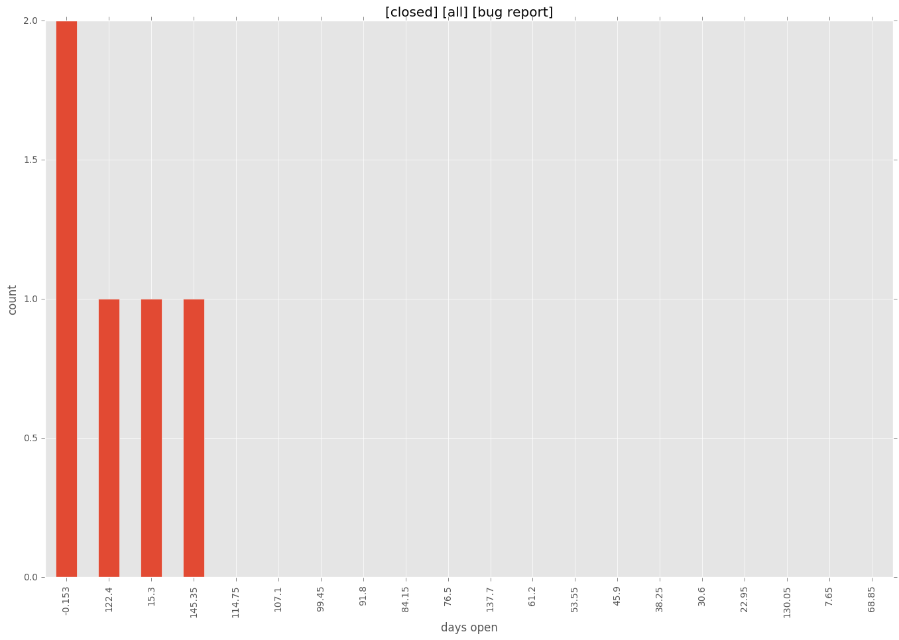

 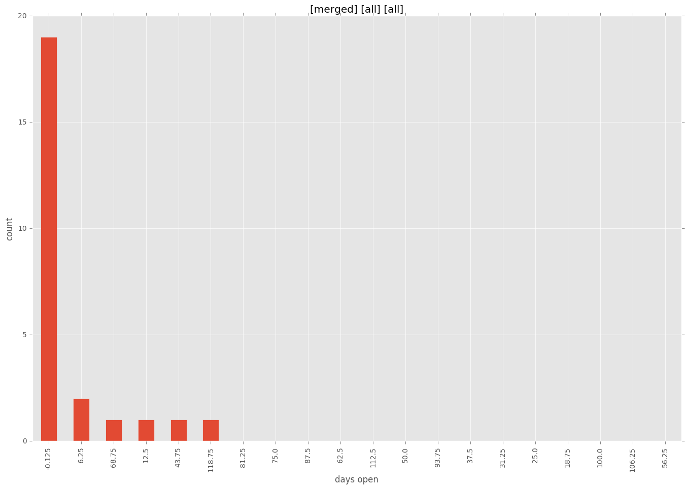
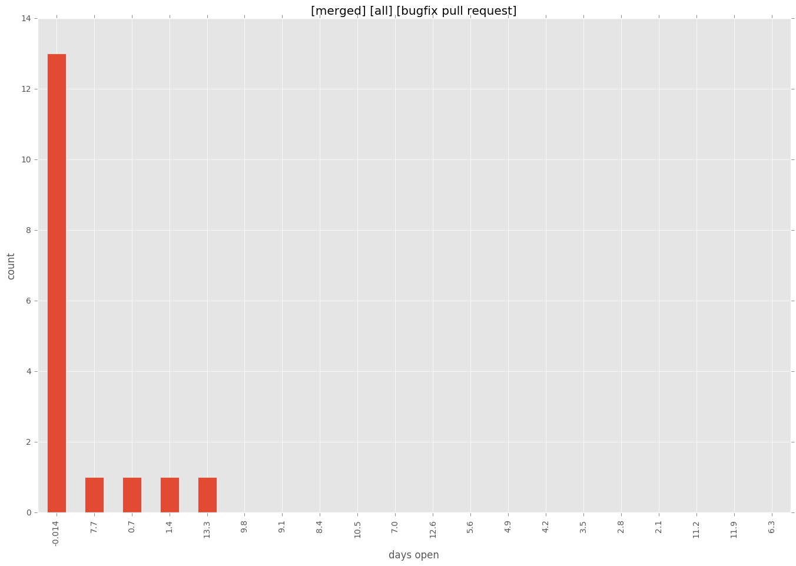
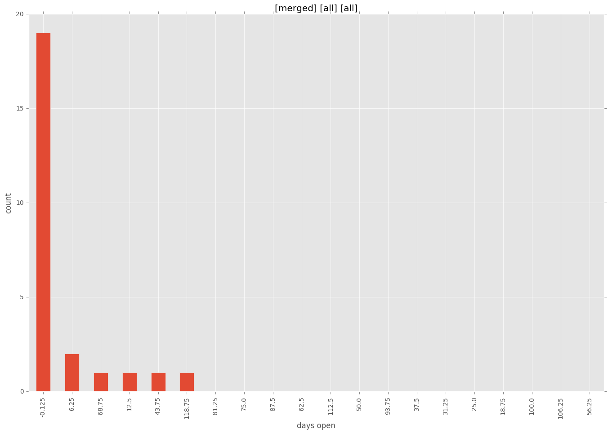
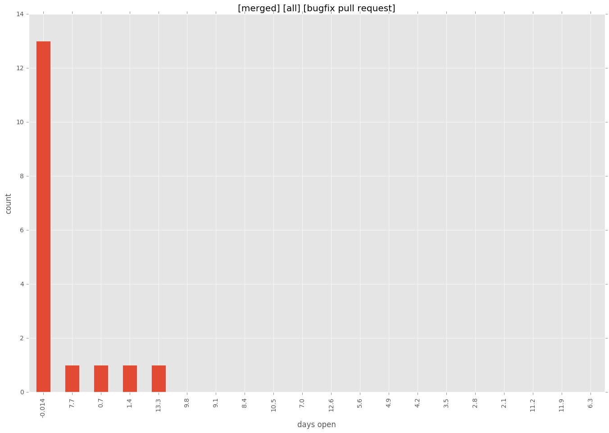